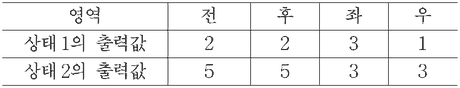

CD 드라이브
지문을 먼저 읽고, 이해가 막히는 문단에서 ‘그림으로 보기’를 누르세요. 그림은 문단을 따라 바뀝니다.
1문단CD 드라이브는 디스크 표면에 조사된 레이저 광선이 반사되거나 산란되는 효과를 이용해 정보를 판독한다. CD의 기록면 중 광선이 흩어짐 없이 반사되는 부분을 랜드, 광선의 일부가 산란되어 빛이 적게 반사되는 부분을 피트라고 한다. CD에는 나선 모양으로 돌아 나가는 단 하나의 트랙이 있는데 트랙을 따라 일렬로 랜드와 피트가 번갈아 배치되어 있다. 피트를 제외한 부분, 즉 이웃하는 트랙과 트랙 사이도 랜드에 해당한다.
2문단CD 드라이브는 디스크 모터, 광 픽업 장치, 광학계 구동 모터로 구성된다. 디스크 모터는 CD를 회전시킨다. CD 아래에 있는 광 픽업 장치는 레이저 광선을 발생시켜 CD 기록면에 조사하고, CD에서 반사된 광선은 광 픽업 장치 안의 광 검출기가 받아들인다. 광선의 경로 상에 있는 포커싱 렌즈는 광선을 트랙의 한 지점에 모으고, 광 검출기는 반사된 광선의 양을 측정하여 랜드와 피트의 정보를 읽어 낸다. 이때 CD의 회전 속도에 맞춰 트랙에 광선이 조사될 수 있도록 광학계 구동 모터가 광 픽업 장치를 CD의 중심부에서 바깥쪽으로 서서히 직선으로 이동시킨다.
3문단CD의 고속 회전 등으로 진동이 생기면 광선의 위치가 트랙을 벗어나거나 초점이 맞지 않아 데이터를 잘못 읽을 수 있다. 이를 막으려면 트래킹 조절 장치와 초점 조절 장치를 제어해 실시간으로 편차를 보정해야 한다. 편차 보정에는 광 검출기가 사용된다. 광 검출기는 가운데를 기준으로 전후좌우의 네 영역으로 분할되어 있는데, 트랙의 방향과 같은 방향으로 전후 영역이, 직각 방향으로 좌우 영역이 배치되어 있다. 이때 각 영역에 조사되는 빛의 양이 많아지면 그 영역의 출력값도 커지며 네 영역의 출력값의 합을 통해 피트와 랜드를 구별한다.
4문단레이저 광선이 트랙의 중앙에 초점이 맞은 상태로 정확히 조사되면 광 검출기 네 영역의 출력값은 모두 동일하다. 그런데 광선이 피트에 해당하는 지점에 조사될 때 트랙의 중앙을 벗어나 좌측으로 치우치면, 피트 왼편에 있는 랜드에서 반사되는 빛이 많아져 광 검출기의 좌 영역의 출력값이 우 영역보다 커진다. 이 경우 두 출력값의 차이에 대응하는 만큼 트래킹 조절 장치를 작동하여 광 픽업 장치를 오른쪽으로 움직여서 편차를 보정한다. 우측으로 치우쳐 조사된 경우에도 비슷한 과정을 거쳐 편차를 보정한다.
5문단한편 광 검출기에 조사되는 광선의 모양은 초점의 상태에 따라 전후나 좌우 방향으로 길어진다. CD 기록면과 포커싱 렌즈 간의 거리가 가까워져 광선의 초점이 맞지 않으면, 조사된 모양이 전후 영역으로 길어지고 출력값도 상대적으로 커진다. 반면 둘 사이의 거리가 멀어지면, 좌우 영역으로 길어지고 출력값도 상대적으로 커진다. 이때 광 검출기의 전후 영역 출력값의 합과 좌우 영역 출력값의 합을 구한 후, 그 둘의 차이에 해당하는 만큼 초점 조절 장치를 이용해 포커싱 렌즈의 위치를 CD 기록면과 가깝게 또는 멀게 이동시켜 초점이 맞도록 한다.
윗글을 바탕으로 <보기>에 대해 설명한 내용으로 적절한 것은? [3점]
다음은 CD 기록면의 피트 위치에 레이저 광선이 조사되었을 때 <상태 1>과 <상태 2>에서 얻은 광 검출기의 출력값이다.
